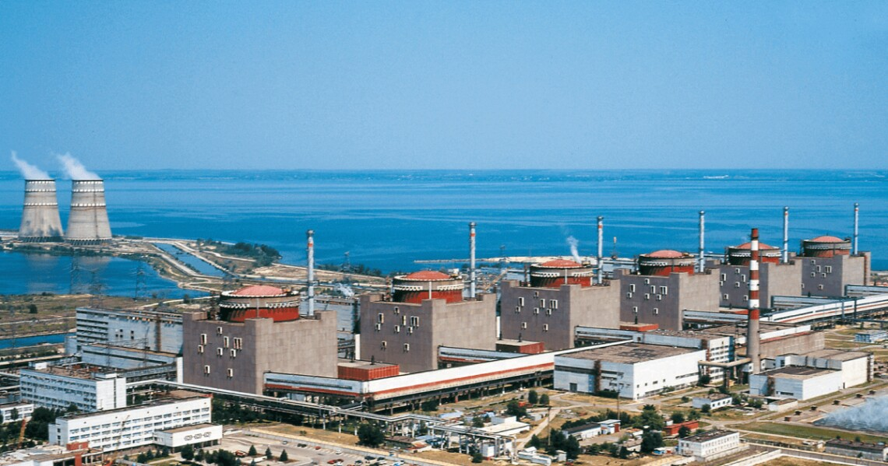
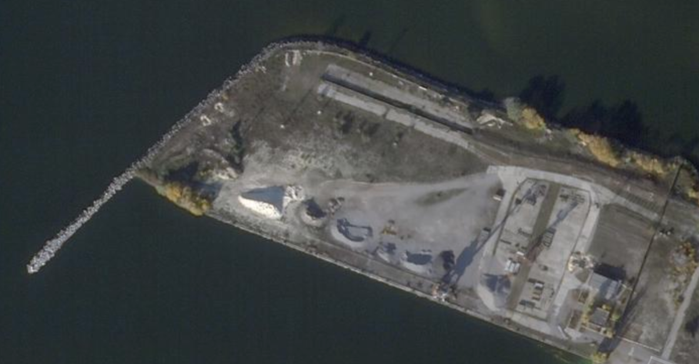

Захоплення міста
Шантаж і загроза ЗАЕС
Спротив енергодарців
Обстріли Енергодара
Місія МАГАТЕ
Окупація та зміна інфопростору
4 березня 2022 року на Запорізькій атомній станції (ЗАЕС) у робочому стані перебував лише енергоблок № 4. Енергоблок № 1 був на планово-попереджувальному ремонті. Енергоблоки № 2 і № 3 — відімкнено від мережі та переведено в безпечний стан. Енергоблоки № 5 і № 6 — переведено в безпечний стан.
Саме енергоблоки № 5 і № 6 регулярно відмикаються від енергомережі через російські обстріли ліній електропередач, і тоді спрацьовує останній запобіжник ядерної катастрофи — дизельні генератори. За час окупації ЗАЕС тричі було повністю знеструмлено: 25 серпня, 2 жовтня і 2 листопада. Наприкінці 2022 року всі шість реакторів Запорізької АЕС зупинено, але вони й досі споживають електроенергію з української енергосистеми. Росіяни блокують їх підключення.
Опівночі з камери спостереження, розташованої в адмінбудівлі на території ЗАЕС, почалася пряма трансляція захоплення станції російською армією. Камера пропрацювала кілька годин, доки росіяни захопили станцію.
Російський снаряд влучив в енергоблок № 1 і пошкодив обшивку реактора. Два снаряди влучили поблизу сховища відпрацьованого ядерного палива, як повідомив Енергоатом.
15 березня керівник НАЕК “Енергоатом” Петро Котін заявив, що на території ЗАЕС перебуває близько 400 російських військових, 50 одиниць техніки і багато вибухівки та зброї.
Червневі супутникові знімки (з сайту Planet) свідчать, що російські військові звели фортифікаційні споруди навколо ЗАЕС. Про це 24 червня також заявив мер Енергодара. Подальші знімки демонструють активне використання й розростання укріплень: у промзоні вздовж дороги з Енергодара до ЗАЕС, на узбережжі біля станції, біля пожежної частини.  Фото: Твіттер журналіста Bellingcat Вілема Званенбурга
29 червня російські військові закатували водолаза гідроцеху ЗАЕС Андрія Гончарука. Його змушували пірнати в охолоджувальний басейн ЗАЕС. Вимога — осушити охолоджувальний басейн нібито для перевірки його чаш щодо наявності закладеної раніше зброї — провокація, яку вигадали росіяни.
Військові наказали адміністрації ЗАЕС відчинити машинні зали на енергоблоках № 1, № 2 і № 3, щоб розмістити там свій військовий арсенал. У машинній залі енергоблоку № 1 зібрано щонайменше 14 одиниць важкої військової техніки з боєкомплектом, зброя та вибухівка, як повідомив Енергоатом. Пізніше інформацію про розташування військових і боєкомлекту в машинних залах станції підтвердили джерела Insider на ЗАЕС і співрозмовник BBC — інженер, який працював там під час окупації.
22 липня український дрон-камікадзе завдав удару по російському військовому наметовому містечку та техніці, розташованим навпроти енергоблоку № 1. Влучив у три зенітні установки та БМ-21 "Град". Троє військових загинули, 12 було травмовано.
5 серпня The Insider оприлюднив відео з доказами переміщення військової техніки біля реакторів.
Також розслідувачі з посиланням на джерела повідомили про замінування машинної зали енергоблоку № 1 і території навколо ЗАЕС; про розміщення “Градів” поблизу села Водяне; про боєприпаси, що зберігаються біля енергоблоків, усередині й під естакадами.
Про естакади, під якими росіяни зберігали військову техніку, згадував в анонімному інтерв’ю BBC один з інженерів станції. “Наприклад, під естакадою біля спецкорпусу № 2 іноді стоять БМ «Град» з боєкомплектом”, — повідомив він. Також розповів, що бачив російські артилерійські установки на майданчику, де зберігаються важкі металеві конструкції, як-от свіжі парогенератори.
5 серпня почалися обстріли ЗАЕС, націлені на знищення енергетичної інфраструктури, що поєднує станцію з українською енергомережею. О 14:30 було зафіксовано влучання у високовольтну лінію зв’язку 330 кВ ВРП автотрансформатора ЗАЕС, повідомила Запорізька ТЕС.
6 серпня Енергоатом повідомив про влучання російських боєприпасів по майданчику ЗАЕС поблизу сухого сховища відпрацьованого ядерного палива (ССВЯП), витік якого може спричинити екологічну катастрофу. У сховищі зберігається 174 контейнери по 24 збірки відпрацьованого ядерного палива. Через обстріли пошкоджено датчики радіаційного моніторингу, що мають сповіщати про витік радіації.
Обстріл ЗАЕС: Енергоатом повідомляє про п’ять “прильотів” у районі комендатури станції — неподалік дільниці зварки та сховища джерел випромінювання. Пошкоджено насосну станцію господарсько-побутових стоків.
22 серпня до ремонтної зони станції росіяни додатково завезли два БТР та шість спецвантажівок, повідомляє Енергоатом. Загалом на території станції було дислоковано понад 40 одиниць військової техніки. Біля енергоблоку № 1 — 16, біля № 2 — 7. Ще 12 загнали під естакаду.
25 серпня ЗАЕС уперше повністю вимкнули. Унаслідок пошкодження повітряної лінії ПЛ-750 кВ “Дніпровська” вимкнено енергоблоки № 5 і № 6.
26 серпня снарядом пробито дах спецкорпусу № 1, є влучання неподалік спецкорпусу № 2 та естакади.
1 вересня представник росіян пояснив директору МАГАТЕ Рафаелю Гроссі, що снаряд у мить приземлення розвертається на 180 градусів навколо своєї осі, тому він стирчить із землі так, ніби прилетів з окупованої росіянами території.
У ніч з 2 на 3 вересня росіяни обстрілювали Нікополь з локації, близької до ЗАЕС, про що свідчить відео, оприлюднене The Insider .
Вибух міни на периметрі ЗАЕС. 29 вересня на лінії подачі напруги на азотно-кисневу станцію від енергоблоку № 6 стався вибух. “Причина в тому, що периметр ЗАЕС заміновано російськими військовими, — повідомляє Енергоатом. — Уже було шість випадків, коли на мінах підривалися собаки, лисиці й дикі кабани”.
30 вересня росіяни викрали гендиректора ЗАЕС Ігоря Мурашова й завезли його до катівні “Яма” (за повідомленням The Wall Street Journal). Його звільнили з полону 3 жовтня завдяки широкому розголосу та втручанню гендиректора МАГАТЕ.
26 жовтня стало відомо, що в охолоджувальному басейні від переохолодження загинула риба, яка виконувала санітарну функцію та забезпечувала чистоту охолоджувальних трубок конденсатора турбіни. Тепла вода не потрапляє у ставок-охолоджувач через зупинку ЗАЕС.
2 листопада ЗАЕС було знеструмлено через обстріли високовольтних ліній зв’язку з українською енергосистемою, почали працювати дизель-генератори. Енергоблоки № 5 і № 6 переведено в холодний стан.
7 грудня Енергоатом повідомив, що росіяни розмістили кілька реактивних систем залпового вогню (РСЗВ) “Град” біля енергоблока № 6, поруч із територією станційного сухого сховища відпрацьованого ядерного палива, де раніше в таємному режимі будували деякі “захисні споруди”.
"На станції тривають роботи з випробування та введення в експлуатацію пересувних котлів на дизельному пальному, щоб запобігти замерзанню критичних систем ЗАЕС у зимовий період", — ідеться у звіті МАГАТЕ за 13 грудня. Мобільні дизельні котли потужністю 1-3 МВт встановлені та працюють на одному з енергоблоків, ще декілька розміщено в інших місцях на майданчику.
Захоплення міста
Шантаж і загроза ЗАЕС
Спротив енергодарців
Обстріли Енергодара
Місія МАГАТЕ
Окупація та зміна інфопростору